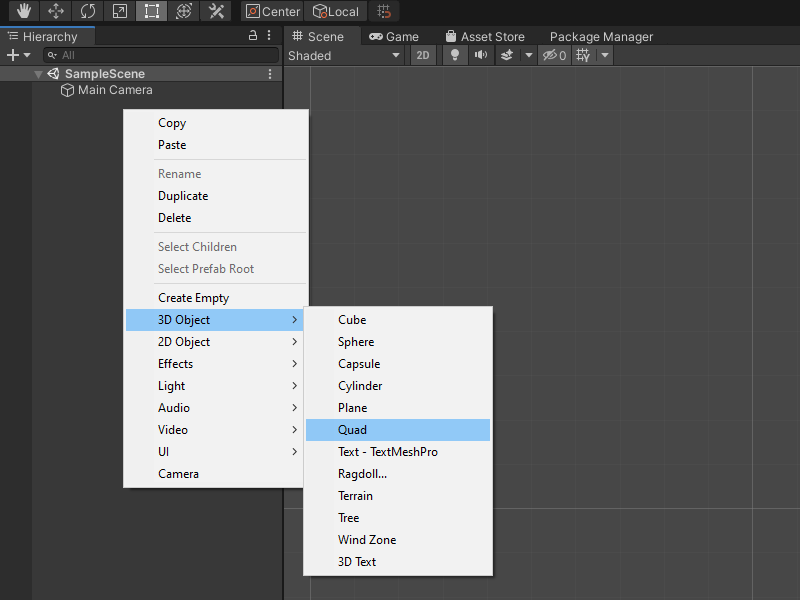

How to Flip an Image With a Compute Shader
- Introduction
- Create a 2D Unity Project
- Create Compute Shader
- Create
FlipScript - Create Screen GameObject
- Create ImageFlipper
- Test it Out
- Conclusion
Introduction
In this post, we’ll cover how to use a compute shader to flip an image across the x-axis, y-axis, and diagonal axis. We will also demonstrate how these operations can be combined to rotate an image.
Create a 2D Unity Project
Open the Unity Hub and create a new 2D project. I’m using Unity 2019.4.20f1, but you should be fine using other versions.
Create Compute Shader
In Unity, right-click an empty space in the Assets folder and open the Create submenu. Select ComputeShader from the Shader submenu and name it FlipShader.

Open the new compute shader in your code editor. By default, compute shaders contain the following code.
// Each #kernel tells which function to compile; you can have many kernels
#pragma kernel CSMain
// Create a RenderTexture with enableRandomWrite flag and set it
// with cs.SetTexture
RWTexture2D<float4> Result;
[numthreads(8,8,1)]
void CSMain (uint3 id : SV_DispatchThreadID)
{
// TODO: insert actual code here!
Result[id.xy] = float4(id.x & id.y, (id.x & 15)/15.0, (id.y & 15)/15.0, 0.0);
}We’ll delete the CSMain function and create a new one for each of our three flip operations.
Define Variables
Before we create our functions, we need to define some extra variables.
Texture2D<float4> InputImage: stores the original imageint height: the height of the input imageint width: the width of the input imageint2 coords: stores the new(x,y)coordinates for individual pixel values
// Create a RenderTexture with enableRandomWrite flag and set it
// with cs.SetTexture
RWTexture2D<float4> Result;
// Stores the original image
Texture2D<float4> InputImage;
// The height of the input image
int height;
// The width of the input image
int width;
// Stores the new location for individual pixel values
int2 coords;Define Flip Functions
The individual flip operations quite simple. They determine the coordinates of the pixel that will replace the values for a given pixel in the image. The RGB pixel values at the calculated coordinates will be stored at the current coordinates in the Result variable.
Flip x-axis: subtract the y value for the current pixel’s(x,y)coordinates from the height of the imageFlip y-axis: subtract the x value for the current pixel’s(x,y)coordinates from the width of the imageFlip diagonal: swap the x and y values for the current pixel’s(x,y)coordinates
These operations are performed on each pixel in parallel on the GPU. We’ll use the default numthreads(8, 8, 1) for each function.
// Each #kernel tells which function to compile; you can have many kernels
#pragma kernel FlipXAxis
#pragma kernel FlipYAxis
#pragma kernel FlipDiag
// Create a RenderTexture with enableRandomWrite flag and set it
// with cs.SetTexture
RWTexture2D<float4> Result;
// Stores the original image
Texture2D<float4> InputImage;
// The height of the input image
int height;
// The width of the input image
int width;
// Stores the new location for individual pixel values
int2 coords;
[numthreads(8, 8, 1)]
void FlipXAxis(uint3 id : SV_DispatchThreadID)
{
// Update the y value for the pixel coordinates
coords = int2(id.x, height - id.y);
Result[id.xy] = float4(InputImage[coords].x, InputImage[coords].y, InputImage[coords].z, 1.0f);
}
[numthreads(8, 8, 1)]
void FlipYAxis(uint3 id : SV_DispatchThreadID)
{
// Update the x value for the pixel coordinates
coords = int2(width - id.x, id.y);
Result[id.xy] = float4(InputImage[coords].x, InputImage[coords].y, InputImage[coords].z, 1.0f);
}
[numthreads(8, 8, 1)]
void FlipDiag(uint3 id : SV_DispatchThreadID)
{
// Swap the x and y coordinate values
coords = int2(id.y, id.x);
Result[id.xy] = float4(InputImage[coords].x, InputImage[coords].y, InputImage[coords].z, 1.0f);
}Create Flip Script
Back in Unity, right-click an empty space in the Assets folder and select C# Script in the Create submenu. Name the new script, Flip and open it in your code editor.

Define Variables
We’ll define the following variables at the top of the script.
public ComputeShader computeShader: The compute shader that contains the flip operationspublic GameObject screen: The screen to which the test image is attachedpublic bool flipXAxis: Toggle whether to flip the image across the x-axispublic bool flipYAxis: Toggle whether to flip the image across the y-axispublic bool flipDiag: Toggle whether to flip the image across the diagonal axisprivate GameObject mainCamera: Stores a reference to the Main Camera objectprivate RenderTexture image: A copy of the original test image
public class Flip : MonoBehaviour
{
[Tooltip("The compute shader that contains the flip operations")]
public ComputeShader computeShader;
[Tooltip("The screen to which the test image is attached")]
public GameObject screen;
[Tooltip("Toggle whether to flip the image across the x-axis")]
public bool flipXAxis;
[Tooltip("Toggle whether to flip the image across the y-axis")]
public bool flipYAxis;
[Tooltip("Toggle whether to flip the image across the diagonal axis")]
public bool flipDiag;
// Stores a reference to the Main Camera object
private GameObject mainCamera;
// A copy of the original test image
private RenderTexture image;Define Start() Method
In the Start() method, we’ll store a copy the original test image in the image RenderTexture. We can do so by getting a reference to the Texture attached to the screen and using the Graphics.Blit() method. We’ll also get a reference to the camera so that we can adjust the view to fit the current image.
// Start is called before the first frame update
void Start()
{
// Get a reference to the image texture attached to the screen
Texture screenTexture = screen.GetComponent<MeshRenderer>().material.mainTexture;
// Create a new RenderTexture with the same dimensions as the test image
image = new RenderTexture(screenTexture.width, screenTexture.height, 24, RenderTextureFormat.ARGB32);
// Copy the screenTexture to the image RenderTexture
Graphics.Blit(screenTexture, image);
// Get a reference to the Main Camera GameObject
mainCamera = GameObject.Find("Main Camera");
}Define FlipImage() Method
Next, we’ll define a new method called FlipImage to handle executing the compute shader. This method will take in the image to be flipped, an empty RenderTexture to store the flipped image, and the name of the function to execute on the compute shader.
To execute the compute shader, we need to first get the kernel index for the specified function and initialize the variables we defined in the compute shader. Once we execute the compute shader using the computeShader.Dispatch() method, we can copy the result to the empty RenderTexture we passed in. We could copy the result directly to the RenderTexture containing the original image. However, this would cause an error when flipping non-square images across the diagonal axis. This is because a RenderTexture can not dynamically change dimensions.
/// <summary>
/// Perform a flip operation of the GPU
/// </summary>
/// <param name="image">The image to be flipped</param>
/// <param name="tempTex">Stores the flipped image</param>
/// <param name="functionName">The name of the function to execute in the compute shader</param>
private void FlipImage(RenderTexture image, RenderTexture tempTex, string functionName)
{
// Specify the number of threads on the GPU
int numthreads = 8;
// Get the index for the PreprocessResNet function in the ComputeShader
int kernelHandle = computeShader.FindKernel(functionName);
/// Allocate a temporary RenderTexture
RenderTexture result = RenderTexture.GetTemporary(tempTex.width, tempTex.height, 24, tempTex.format);
// Enable random write access
result.enableRandomWrite = true;
// Create the RenderTexture
result.Create();
// Set the value for the Result variable in the ComputeShader
computeShader.SetTexture(kernelHandle, "Result", result);
// Set the value for the InputImage variable in the ComputeShader
computeShader.SetTexture(kernelHandle, "InputImage", image);
// Set the value for the height variable in the ComputeShader
computeShader.SetInt("height", image.height);
// Set the value for the width variable in the ComputeShader
computeShader.SetInt("width", image.width);
// Execute the ComputeShader
computeShader.Dispatch(kernelHandle, tempTex.width / numthreads, tempTex.height / numthreads, 1);
// Copy the flipped image to tempTex
Graphics.Blit(result, tempTex);
// Release the temporary RenderTexture
RenderTexture.ReleaseTemporary(result);
}Define Update() Method
First, we need to make another copy of the original image so that we can edit it. We’ll store this copy in a temporary RenderTexture called rTex that will get released at the end of the method.
The steps are basically the same for performing each of the three flip operations. We first allocate a temporary RenderTexture called tempTex to store the flipped image. We then call the FlipImage method with the appropriate function name. Next, we copy the flipped image to rTex. Finally, we release the resources allocated for tempTex. The steps for flipping the image across the diagonal axis is slightly different as we can’t directly copy a flipped image with different dimensions back to rTex. Instead, we have to directly assign the currently active RenderTexture to rTex.
After we copy tempTex back to rTex we’ll update the Texture for the screen with the flipped image and adjust the shape of the screen to fit the new dimensions.
// Update is called once per frame
void Update()
{
// Allocate a temporary RenderTexture with the original image dimensions
RenderTexture rTex = RenderTexture.GetTemporary(image.width, image.height, 24, image.format);
// Copy the original image
Graphics.Blit(image, rTex);
// Temporarily store the flipped image
RenderTexture tempTex;
if (flipXAxis)
{
// Allocate a temporary RenderTexture
tempTex = RenderTexture.GetTemporary(rTex.width, rTex.height, 24, rTex.format);
// Perform flip operation
FlipImage(rTex, tempTex, "FlipXAxis");
// Free the resources allocated for the Tempoarary RenderTexture
RenderTexture.ReleaseTemporary(rTex);
// Allocate a temporary RenderTexture
rTex = RenderTexture.GetTemporary(tempTex.width, tempTex.height, 24, rTex.format);
// Copy the flipped image
Graphics.Blit(tempTex, rTex);
// Free the resources allocated for the Tempoarary RenderTexture
RenderTexture.ReleaseTemporary(tempTex);
}
if (flipYAxis)
{
// Allocate a temporary RenderTexture
tempTex = RenderTexture.GetTemporary(rTex.width, rTex.height, 24, rTex.format);
// Perform flip operation
FlipImage(rTex, tempTex, "FlipYAxis");
// Free the resources allocated for the Tempoarary RenderTexture
RenderTexture.ReleaseTemporary(rTex);
// Allocate a temporary RenderTexture
rTex = RenderTexture.GetTemporary(tempTex.width, tempTex.height, 24, rTex.format);
// Copy the flipped image
Graphics.Blit(tempTex, rTex);
// Free the resources allocated for the Tempoarary RenderTexture
RenderTexture.ReleaseTemporary(tempTex);
}
if (flipDiag)
{
// Allocate a temporary RenderTexture
tempTex = RenderTexture.GetTemporary(rTex.height, rTex.width, 24, rTex.format);
// Perform flip operation
FlipImage(rTex, tempTex, "FlipDiag");
// Free the resources allocated for the Tempoarary RenderTexture
RenderTexture.ReleaseTemporary(rTex);
// Assign a reference to the active RenderTexture
rTex = RenderTexture.active;
// Free the resources allocated for the Tempoarary RenderTexture
RenderTexture.ReleaseTemporary(tempTex);
}
// Apply the new RenderTexture
screen.GetComponent<MeshRenderer>().material.SetTexture("_MainTex", rTex);
// Adjust the scree dimensions to fit the new RenderTexture
screen.transform.localScale = new Vector3(rTex.width, rTex.height, screen.transform.localScale.z);
// Adjust the camera size to account for updates to the screen
mainCamera.GetComponent<Camera>().orthographicSize = rTex.height / 2;
// Free the resources allocated for the Tempoarary RenderTexture
RenderTexture.ReleaseTemporary(rTex);
}Create Screen GameObject
Back in Unity, right-click an empty space in the Hierarchy tab and select Quad from the 3D Object submenu. Name the new object Screen. The size will be updated automatically by the Flip.cs script.

Create ImageFlipper
Right-click an empty space in the Hierarchy tab and select Create Empty from the pop-up menu. Name the empty object ImageFlipper

With the ImageFlipper selected, drag and drop the Flip.cs script into the Inspector tab.

Drag and drop the Screen object from the Hierarchy tab as well as the FlipShader from the Assets folder onto their respective spots in the Inspector tab.

Test it Out
We’ll need a test image to try out the ImageFlipper. You can use your own or download the one I used for this tutorial.
Drag and drop the test image into the Assets folder. Then drag it onto the Screen in the Scene.

Next, we need to set our Screen to use an Unlit shader. Otherwise it will be a bit dim. With the Screen object selected, open the Shader drop-down menu in the Inspector tab and select Unlit.
Select Texture from the Unlit submenu.

Now we can click the Play button and toggle the different flip checkboxes to confirm our script is working properly. If you check the performance stats, you should see that there is a negligible performance hit from flipping the image even when performing all three operations at once.
Default Image

Flip X-Axis
Flip Y-Axis
Flip Diagonal Axis

Flip X-Axis and Y-Axis
Flip X-Axis and Diagonal Axis

Flip Y-Axis and Diagonal Axis

Flip X-Axis, Y-Axis and Diagonal Axis

Conclusion
That is one approach to efficiently flip images on the GPU in Unity. As demonstrated above, the operations can be combined in different ways to rotate the image as well.
Project Resources: GitHub Repository
- I’m Christian Mills, a deep learning consultant specializing in computer vision and practical AI implementations.
- I help clients leverage cutting-edge AI technologies to solve real-world problems.
- Learn more about me or reach out via email at christian@christianjmills.com to discuss your project.